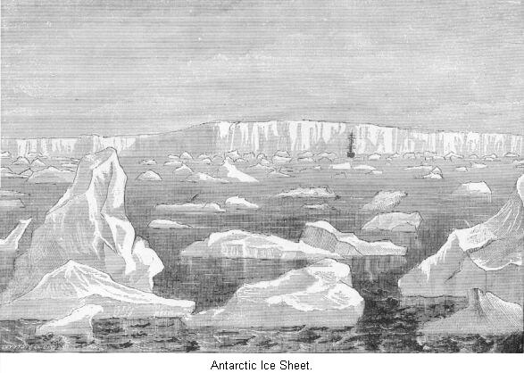
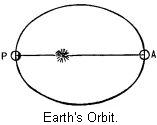

Chapter V
ANTIQUITY OF THE
PALEOLITHIC AGE.1
Interest in the Antiquity of
man—Connected with the Glacial Age—The Subject
Difficult—Proofs of a Glacial Age—State of Greenland
to-day—The Terminal Moraine—Appearance of the North
Atlantic—Interglacial Age—Causes of the Glacial
Age—Croll's Theory—Geographical causes—The two
theories not Antagonistic—The date of the Glacial
Age—Probable length of the Paleolithic Age—Time since
the close of the Glacial Age—Summary of results.
 WE have already remarked,
geological periods give us no insight as to the actual passage of
years. To say that man lived in the Glacial Age, and that we have
some faint traces of his presence in still earlier periods, after
all conveys to our minds only vague ideas of a far-away time. The
more a geologist studies the structure of the earth, the more
impressed is he with the magnitude of the time that must have
passed since "The Beginning." At present, however, there are no
means known of accurately measuring the time that has passed. It
is just as well that it is so, since, were it known, the human
mind would be utterly incapable of comprehending it. But as to
the antiquity of man, it is but natural that we should seek more
particularly to solve the problem and express our answer in some
term of years.
WE have already remarked,
geological periods give us no insight as to the actual passage of
years. To say that man lived in the Glacial Age, and that we have
some faint traces of his presence in still earlier periods, after
all conveys to our minds only vague ideas of a far-away time. The
more a geologist studies the structure of the earth, the more
impressed is he with the magnitude of the time that must have
passed since "The Beginning." At present, however, there are no
means known of accurately measuring the time that has passed. It
is just as well that it is so, since, were it known, the human
mind would be utterly incapable of comprehending it. But as to
the antiquity of man, it is but natural that we should seek more
particularly to solve the problem and express our answer in some
term of years.
Now, we have seen that the question of the
antiquity of man is intimately connected with that of the Glacial
Age. That is to say, the relics of man as far as we know them in
Europe, are found under such circumstances that we feel confident
they are not far removed from the period of cold. For it will be
found that those conservative scholars who do not think that man
preceded the Glacial Age, or inhabited Europe during the long
course of years included in that period, do think he came into
Europe as soon as it passed away. So, in any case, if we can
determine the date of the Glacial Age, we shall have made a most
important step in advance in solving the problem of the antiquity
of man himself. So it seems to us best to go over the subject of
the Glacial Age again, and see what conclusions some of our best
thinkers have come to as to its cause, when it occurred, and
other matters in relation to it.
It is best to state frankly at the outset that
this topic is one of the great battle-grounds of science to-day,
and that there are as yet but few points well settled in regard
to it. One needs but attempt to read the literature on this
subject to become quickly impressed with the necessity of making
haste slowly in forming any conclusions. He must invoke the aid
of the astronomer, geologist, physical-geographer, and physicist.
Yet we must not suppose that questions relating to the Glacial
Age are so abstruse that they are of interest only to the
scholar. On the contrary, all ought to be interested in them.
They open up one of the most wonderful chapters in the history of
the world. They recall from the past a picture of ice-bound
coasts and countries groaning under icy loads, where now are
harbors enlivened by the commerce of the world, or ripening
fields attesting the vivifying influence of a genial sun. Let us,
therefore, follow after the leaders in thought. When we come to
where they can not agree we can at least see what both sides have
to say.
Somewhat at the risk of repetition, we will
try and impress on our readers a sense of the reality and
severity of the Glacial Age. There is danger in regarding this as
simply a convenient theory that geologists have originated to
explain some puzzling facts, that it is not very well founded,
and is liable to give way any day to some more ingenious
explanation. On the contrary, this whole matter has been worked
out by very careful scholars. "There is, perhaps, no great
conclusion in any science which rests upon a surer foundation
than this, and if we are to be guided by our reason at all in
deducting the unknown from the known, the past from the present,
we can not refuse our assent to the reality of the Glacial Age of
the Northern Hemisphere in all its more important features.2 At the present day glaciers do
exist in several places on the earth. They are found in the Alps
and the mountains of Norway, and the Caucasus, in Europe. The
Himalaya mountains support immense glaciers in Asia; and in
America a few still linger in the more inaccessible heights of
the Sierra Nevada. It is from a study of these glaciers, mainly
however, those of the Alps, that geologists have been enabled to
explain the true meaning of certain formations they find in both
Europe and America, that go by the name of drift.
When in an Alpine valley we come upon a
glacier, filling it from side to side, there will be noticed upon
both sides a long train of rock, drift, and other
débris that have fallen down upon its surface from
the mountain sides. If two of these ice-rivers unite to form one
glacier, two of these trains will then be borne along in the
middle of the resulting glacier. As this glacier continues down
the valley, it at length reaches a point where a further advance
is rendered impossible by the increased temperature melting the
ice as fast as it advances. At this point the train of rocks and
dirt are dumped, and of course form great mounds, called
moraines. The glacier at times shrinks back on its rocky bed and
allows explorers to examine it.
In such cases they find the rocks smoothed and
polished, but here and there marked with long grooves and
striæ. These points are learned from an examination of
existing glaciers. Further down the valley, where now the
glaciers never extend, are seen very distinctly the same signs.
There are the same moraines, striated rocks, and bowlders that
have evidently traveled from their home up the valley. The only
explanation possible in this case is that once the glaciers
extended to that point in the valley.
It required a person who was perfectly
familiar with the behavior of Alpine glaciers, and knew exactly
what marks they left behind in their passage, to point out the
proofs of their former presence in Northern Europe and America,
where it seems almost impossible to believe they existed. Such a
man was Louis Agassiz, the eminent naturalist. Born and educated
in Switzerland, he spent nine years in researches among the
glaciers of the mountains of his native country. He proved the
former wide extension of the glaciers of Switzerland. With these
results before them, geologists were not long in showing that
there had once been glacial ice over a large part of Europe and
North America.
The proofs in this case are almost exactly the
same as those used to show that the ancient glaciers of
Switzerland were once larger than now. But as the great glaciers
of the glacial age were many times larger than any thing we know
of at the present day, there were of course different results
produced.
For instance, the water circulating under
Alpine glaciers is enabled to wash out and carry away the mass of
pulverized rock and dirt ground along underneath the ice. But
when the glaciers covered such an enormous extent of country as
they did in the Glacial Age, the water could not sweep away this
detritus, and so great beds of gravel, sand, and clay would be
formed over a large extent of country. But to go over the entire
ground would require volumes; it is sufficient to give the
results.
The interior of Greenland to-day is covered by
one vast sea of ice. Explorers have traversed its surface for
many miles; not a plant, or stone, or patch of earth is to be
seen. In the Winter it is a snow-swept waste. In the Summer
streams of ice-cold water flow over its surface, penetrating here
and there by crevasses to unknown depths. This great glacier is
some twelve hundred miles long, by four hundred in width.3 Vast as it is, it is utterly
insignificant as compared with the great continental glacier that
geologists assure us once held in its grasp the larger portion of
North America.
The conclusions of some of our best scholars
on this subject are so opposed to all that we would think
possible, according to the present climate and surroundings, that
they seem at first incredible, and yet they have been worked out
with such care that there is no doubt of the substantial truth of
the results.
The terminal moraine of the great glacier has
been carefully traced through several States. We now know that
one vast sea of ice covered the eastern part of North America,
down to about the thirty-ninth parallel of latitude. We have
every reason to think that the great glacier, extending many
miles out in the Atlantic, terminated in a great sea of ice,
rising several hundred feet perpendicularly above the surface of
the water. Long Island marks the southern extension of this
glacier. From there its temporal moraine has been traced west,
across New Jersey and Pennsylvania, diagonally across Ohio,
crossing the river near Cincinnati, and thence west across
Indiana and Illinois. West of the Mississippi it bears off to the
north- west, and finally passes into British America.4
All of North America, to the north and
northeast of this line, must have been covered by one vast sea of
ice.5 Doubtless, as in Greenland
to-day, there was no hill or patch of earth to be seen, simply
one great field of ice. The ice was thick enough to cover from
sight Mt. Washington, in New Hampshire, and must have been at
least a mile thick over a large portion of this area,6 and even at its southern border it must
in places have been from two hundred to two thousand feet
thick.7 This, as we have seen, is
a picture very similar to what must have been presented by Europe
at this time.8

The Northern Atlantic Ocean must have
presented a dreary aspect. Its shores were walls of ice, from
which ever and anon great masses sailed away as icebergs. These
are startling conclusions. Yet, in the Southern Hemisphere to-day
is to be seen nearly the same state of things. It is well-known
that all the lands around the South Pole are covered by a layer
of ice of enormous thickness. Sir J. A. Ross, in attempting to
reach high southern latitudes, while yet one thousand four
hundred miles from the pole, found his further progress impeded
by a perpendicular wall of ice one hundred and eighty feet thick.
He sailed along that barrier four hundred and fifty miles, and
then gave up the attempt. Only at one point in all that distance
did the ice wall sink low enough to allow of its upper surface
being seen from the mast-head. He describes the upper surface as
an immense plain shining like frosted silver, and stretching away
as far as eye could reach into the illimitable distance.9
The foregoing makes plain to us one phase of
the Glacial Age. Though it may not be quite clear what this has
to do with the antiquity of man, yet we will see, in the sequel,
that it has considerable. As to the periods of mild climate that
are thought by some to have broken up the reign of cold, we do
not feel that we can say any thing in addition to what has been
said in a former chapter.10
We might, however, say, that the sequences of
mild and cold climate are not as well made out in America as they
seem to be in Europe; or at least our geologists are more
cautious as to accepting the evidence as sufficient. And yet such
evidences are not wanting: as in Europe, at various places, are
found layers of land surfaces with remains of animals and plants,
but both above and below such surface soil are found beds of
bowlder clay. These offer undeniable evidence that animals and
plants occupied the land during temperate inter-glacial epochs,
preceded and followed by an Arctic climate, and ice-sheets like
those now covering the interior of Greenland, and the Antarctic
Continent.11
We have thus, though somewhat at length, gone
over the evidence as to the reality and severity of the Glacial
Age. It was during the continuance of such climate that
Paleolithic man arrived in Europe, though it was not perhaps
until its close. We must not lose sight of the fact that our
principal object at present is to determine, if we can, a date
for either the beginning or ending of this extraordinary season
of cold, and thereby achieve an important step in determining the
antiquity of man.
A moment's consideration will show us that a
period of cold sufficient to produce over a large portion of the
Northern Hemisphere the results we have just set forth must have
a cause that is strange and far-reaching. It can not be some
local cause, affecting but one continent, since the effect
produced is observed as well in Europe as in America.
Every year we pass through considerable
changes in climate. The four seasons of the year seem to be but
an annual repetition, on a very small scale of course, of the
great changes in the climate of the earth that culminated in the
Glacial Age; though we do not mean to say, that periods of
glacial cold come and go with the regularity of our Winter. The
changes in the seasons of the year are caused by the earth's
position in its orbit, and its annual revolution around the sun.
It may be that the cause of the Glacial Age itself is of a
similar nature; in which case it is an astronomical problem, and
we ought, by calculation, to determine, with considerable
accuracy, dates for the beginning and ending of this epoch.
Nothing is clearer than that great
fluctuations of climate have occurred in the past. Many theories
have been put forth in explanation. It has been suggested that it
was caused by loss of heat from the earth itself. That the earth
was once a ball of incandescent matter, like the sun, and has
since cooled down, is of course admitted. More than that, this
process still continues; and the time must come when the earth,
having yielded up its internal heat, will cease to be an
inhabitable globe. But the climate of the surface of the earth is
not dependent upon the heat of the interior. This now depends
"according to the proportion of heat received either directly or
indirectly from the sun; and so it must have been during all the
ages of which any records have come down to us."12 Some have supposed that the sun,
traveling as it does through space, carrying the earth and the
other planets with him, might, in the course of ages, pass
through portions of space either warmer or colder than that in
which it now moves. When we come to a warm region of space, a
genial climate would prevail over the earth; but, when we struck
a cold belt, eternal Winter would mantle a large part of the
globe with snow and ice. This, of course, is simply guess-work.
No less than seven distinct causes have been urged; most of them
either purely conjectural, like the last, or manifestly
incompetent to produce the great results which we have seen must
be accounted for. But, amongst these, two causes have been
advanced—the one astronomical, the other geographical; and,
to the one or the other, the majority of scholars have given
their consent.
It will be no harm to see what can be said in
favor of both theories. So, we will ask the reader's attention,
as it is our earnest desire to make as plain as possible a
question that has so much to do with our present inquiry. In the
course of our investigations, we can not fail to catch glimpses
of wonderful changes in far away times; and can not help seeing
what labor is involved in the solution of all questions relating
to the same.13

The earth revolves around the sun in an orbit
called an ellipse. This is not a fixed form, but slowly varies
from year to year. It is now gradually becoming circular. It
will, however, not become an exact circle. Astronomers assure us
that, after a long lapse of time, it will commence to elongate as
an ellipse again. Thus, it will continually change from an
ellipse to an approximate circle, and back again. In scientific
language, the eccentricity of, the earth's orbit is said to
increase and decrease.
In common language we would state that the
shape of the path of the earth around the sun was sometimes much
more elongated and elliptical than at others. The line drawn
through the longest part of an ellipse is called the major axis.
Now the sun does not occupy the center of this line, but is
placed to one side of it; or, in other words, occupies one focus
of the ellipse. It will thus be seen that the earth, at one time
during its yearly journey, is considerably nearer to the sun than
at others. The point where it approaches nearest the sun is
called Perihelion, and the point where it reaches the
greatest distance from the sun is called its Aphelion. It
will be readily seen that the more elliptical its orbit becomes
the greater will be the difference between the perihelion and
aphelion distance of the sun. At present the earth is about three
millions of miles nearer the sun in perihelion than in aphelion.
But we must remember the orbit of the earth is now nearly
circular. There have been times in the past when the difference
was about thirteen millions of miles. We must not forget to add,
that the change in the shape of the earth's orbit is not a
regular increase and decrease between well-known extremes. It is
caused by the attraction of the other planets. It has been
calculated at intervals of ten thousand years for the last
million years. In this way it has been found that "the intervals
between connective turning points are very unequal in length, and
the actual maximum and minimum values of the eccentricity are
themselves variable. In this way it comes about that some periods
of high eccentricity have lasted much longer than others, and
that the orbit has been more elliptical at some epochs of high
eccentricity than at others."14
We have just seen that the earth is nearer the sun at one time of
the year than at another. At present the earth passes its
perihelion point in the Winter of the Northern Hemisphere, and
its aphelion point in the Summer. We will for the present suppose
that it always reaches the points at the same season of the year.
Let us see if the diminished distance from the sun in Winter has
any thing to do with the climate.
If so, this effect will be greatly magnified
during a period of high eccentricity, such as the earth has
certainly passed through in the past. We will state first, that
the more elliptical the orbit becomes, the longer Summer we have,
and the shorter Winter. Astronomically, Spring begins the 20th of
March, and Fall the 22d of September. By counting the days
between the epochs it will be found that the Spring and Summer
part of the year is seven days longer than the Fall and Winter
part. But if the earth's orbit becomes as highly eccentrical as
in the past, this difference would be thirty-six days.15
This would give us a long Spring and Summer,
but a short Fall and Winter. This in itself would make a great
difference. We must beer in mind, however, that at such a time as
we are here considering, the earth would be ten millions of miles
nearer the sun in Winter than at present. It would certainly then
receive more heat in a given time during Winter than at
present.16 Mr. Croll estimates
that whereas the difference in heat received during a given time
is now one-fifteenth,17 at the
time we are considering it would be one-fifth. Hence we see that
at such a time the Winter would not only be much shorter than
now, but at the same time would be much milder.
These are not all the results that would
follow an increase of eccentricity. The climate of Europe and
North America is largely modified by those great ocean
currents—the Gulf Stream and the Japan current. Owing to
causes we will not here consider, these currents would be greatly
increased at such a time. As a result of these combined causes,
Mr. Croll estimates that during a period of high eccentricity the
difference between Winter and Summer in the Northern Hemisphere
would be practically obliterate. The Winter would not only be
short, but very mild, and but little snow would form, while the
sun of the long Summers, though not shining as intense as at
present, would not have to melt off a great layer of snow and
ice, but the ground became quickly heated, and so warmed the air.
Hence, if Mr. Croll be correct, a period of high eccentricity
would certainly produce a climate in the Northern Hemisphere such
as characterized many of the mild interglacial epochs as long as
the earth passed its perihelion point in Winter.
We have so far only considered the Northern
Hemisphere. As every one knows, while we have Winter, the
Southern Hemisphere has Summer. So at the very time we would
enjoy the mild short Winters, the Southern Hemisphere would be
doomed to experience Winters of greatly increased length and
severity. As a consequence, immense fields of snow would be
formed, which, by pressure, would be changed to ice, and creep
away as a desolating glacier. It is quite true that the short
Summer sun would shine with increased warmth, but owing to many
causes it would not avail to free the land from snow and ice.
As Mr. Geikie points out, "An increased amount
of evaporation would certainly take place, but the moisture-laden
air would be chilled by coming into contact with the vast sheets
of snow, and hence the vapor would condense into thick fogs and
cloud the sky. In this way the sun's rays would be, to a large
extent, cut off, and unable to reach the earth, and consequently
the Winter's snow would not be all melted away." Hence it follows
that at the very time the Northern Hemisphere would enjoy a mild
interglacial climate, universal Spring, so to speak, the Southern
Hemisphere would be encased in the ice and snow of an eternal
Winter.
But the earth has not always reached its
perihelion point during the Winter season of the Northern
Hemisphere. Owing to causes that we need not here consider, the
earth reaches its perihelion point about twenty minutes earlier
each year, so if it now passes its perihelion in Winter of the
Northern Hemisphere, in about ten thousand years from now it will
reach it in Summer, and in twenty-one thousand, years it will
again be at perihelion in Winter. But see what important
consequences follow from this. If during a period of high
eccentricity we are in the enjoyment of short mild Winters and
long pleasant Summers, in ten thousand years this would certainly
be changed. Our Summer season would become short and heated; our
Winters long and intensely cold. Year by year it would be later
in the season before the sun could free the land from snow, and
at length in deep ravines and on hill-tops the snow would linger
through the brief Summer, and the mild interglacial age will have
passed away, and again the Northern Hemisphere will be visited by
snow and ice of a truly. Glacial Age. If, therefore, a period of
high eccentricity lasts through the many thousand years, we must
expect more than one return of glacial cold interspersed by mild
interglacial climates.
We have tried in these last few pages to give
a clear statement of what is known as Croll's theory of the
Glacial Age. There is no question but what the earth does thus
vary in its position with regard to the sun, and beyond a doubt
this must produce some effect on the climate, and we can
truthfully state that the more the complicated question of the
climate of the earth is studied, the more grounds do scholars
find for affirming that indirectly this effect must have been
very great. And yet we can not say that this theory is accepted
as a satisfactory one even by the majority of scholars. Many of
those who do not reject it think it not proven. Therefore, before
interrogating the astronomer as to the data of the Glacial Age,
according to the terms of this theory, let us see what other
causes are, adduced; then we can more readily accept or reject
the conclusions as to the antiquity of man which this theory
would necessitate us to adopt.
The only other cause to which we can assign
the glacial cold, that is considered with any favor by
geologists, is geographical; that is to say, depending on the
distribution of land and water. Glaciers depend on the amount of
snow-fall. In any country where the amount of snow-fall is so
great that it is not all evaporated or melted by the Summer's
sun, and consequently increases from year to year, glaciers must
soon appear, and these icy rivers would ere-long, flow away to
lower levels. If we suppose, with Sir Charles Lyell, that the
lands of the globe were all to be gathered around the equator,
and the waters were gathered around the poles, it is manifest
that there would be no such a thing as extremes of temperature,
and it is, perhaps, doubtful whether ice would form, even in
polar areas.18 At any rate, no
glaciers could be formed, as there would be no land on which snow
could gather in great quantities.
If, however, we reverse this picture, and
conceive of the land gathered in a compact mass around the poles,
shutting out the water, but consider the equatorial region of the
earth to be occupied by the waters of the ocean, we would
manifestly have a very different scene. From the ocean
moisture-laden winds would flow over the polar lands. The
snowfall would necessarily be great. In short, we can not doubt
but what all the land of the earth would be covered with
glaciers.19
Although these last conceptions are purely
hypothetical, they will serve the good purpose of showing the
great influence that the geographical distribution of land and
water have on the climate of a country. Of one thing, however,
geologists have become more and more impressed of late years.
That is, that continents and oceans have always had the same
relative position as now; that is to say, the continents have
followed a definite plan in their development. The very first
part of North America to appear above the waters of the primal
sea clearly outlined the shape of the future continent. Mr. Dana
assures us that our continent developed with almost the
regularity of a flower. Prof. Hitchcock also points out that the
surface area of the very first period outlined the shape of the
continent. "The work of later geological periods seems to have
been the filling up of the bays and sounds between the great
islands, elevating the consolidated mass into a continental
area."20 So it is not at all
probable that the lands of the globe were ever grouped, as we
have here supposed them.
This last statement is liable, however, to
leave us under a wrong impression; for although, as a whole,
continental areas have been permanent, yet in detail they have
been subject to wonderful and repeated changes. "Every square
mile of their surface has been again and again under water,
sometimes a few hundred feet deep—sometimes, perhaps,
several thousand. Lakes and inland seas have been formed and been
filled up with sediment, and been subsequently raised into hills,
or even mountains. Arms of the sea have existed, crossing the
continent in various directions, and thus completely isolating
the divided portions for varying intervals. Seas have become
changed into deserts and deserts into seas."21
It has been shown beyond all question that
North-western Europe owes its present mild climate to the
influence of the Gulf Stream.22
Ocean currents, then, are a most important element in determining
the climate of a country. If we would take the case of our
hypothetical polar continent again, and, instead of presenting a
continuous coast line, imagine it penetrated by long straits and
fiords, possessing numerous bays, large inland seas, and in
general allowing a free communication with the ocean, we are very
sure the effect would be widely different.
Under these circumstances, says Mr. Geikie,
the "much wider extent of sea being exposed to the blaze of the
tropical sun, the temperature of the ocean in equatorial regions
would rise above what it is at present. This warm water, sweeping
in broad currents, would enter the polar fiords and seas, and
everywhere, beating the air, would cause warm, moist winds to
blow athwart the land to a much greater extent than they do at
present; and these winds thus distributing warmth and moisture,
might render even the high latitude of North Greenland habitable
by civilized man." So we see that it is necessary to look for
such geographical changes as will interfere with the movements of
marine currents.
Now, it is easy to see that comparatively
small geographical changes would not only greatly interfere with
these currents, but might even cause them to entirely change
their course. An elevation of the northern part of North America,
no greater in amount than is supposed to have taken place at the
commencement of the Glacial Age, would bring the wide area of the
banks of Newfoundland far above the water, causing the American
coast to stretch out in an immense curve to a point more than six
hundred miles east of Halifax, and this would divert much of the
Gulf Stream straight across to the coast of Spain.23
Such an elevation certainly took place, and if
continued westward, Behring's Strait would also have been closed.
It is to such northern elevations, shutting out the warm ocean
currents, that a great many geologists look for a sufficient
explanation of the glacial cold.
Prof. Dana says: "Increase in the extent and
height of high latitude lands may well stand as one cause of the
Glacial Age." Then he points out how the rising of the land of
Northern Canada and adjacent territory, which almost certainly
took place, "all a sequel to the majestic uplift of the Tertiary,
would have made a glacial period for North America, whatever the
position of the ecliptic, or whatever the eccentricity of the
earth's orbit, though more readily, of course, if other
circumstances favored it."24
It may occur to some that if high northern
lands be all that is necessary for a period of cold, we ought to
have had it in the Miocene Age, when there was a continuous land
connection between the lands of high polar areas and both Europe
and America, since we know that an abundant vegetation spread
from there, as a center, to both these countries. But at that
epoch circumstances were different. The great North Temperate
lands were in a "comparatively fragmentary and insular
condition."25 There were great
inland seas in both Europe and Asia, through which powerful
currents would have flowed from the Indian Ocean to Arctic
regions.
Somewhat similar conditions prevailed in North
America. The western part was in an insular condition. A great
sea extended over this part of the country, joining the Arctic
probably on the north, through which heated water would pour into
the polar sea. And so, instead of a Glacial Age, we find evidence
of a mild and genial climate, with an abundant vegetation.
We thus see that there are two theories as to
the cause of the Glacial Age presented for our consideration.
Both of them have received the sanction of scholars eminent for
their scientific attainments. On inspection we see they are not
antagonistic theories. They may both be true for that matter, and
all would admit that whatever effect they would produce singly
would be greatly enhanced if acting together. Indeed, there are
very good reasons for supposing both must have acted in
unison.
There seem to be very good reasons for not
believing that the eccentricity of the earth's orbit, acting
alone, produced the glacial cold. If that were the case, then
whenever the eccentricity was great we should have a Glacial Age.
Now, at some period of time during the long-extended Tertiary Age
we are certain the eccentricity of the earth's orbit became very
great, much more so, in fact, than that which is supposed to have
produced the cold of the Quaternary Age. But we are equally
certain there was no glacial epoch during this age.26 What other explanation can we give for
its non-appearance except that geographical conditions were not
favorable?
But, on the other hand, there are certain
features connected with the phenomena of the Glacial Age that
seem very difficult of explanation, if we suppose that
geographical changes alone produced them. We must remember that
evidences of the former presence of glaciers are found widely
scattered over the earth. We shall, therefore, have to assume an
elevation not only for America and Europe, but extend it over
into Asia, and take in the Lebanon Mountains, for they also show
distinct traces of glaciers. And this movement of elevation must
also have affected the Southern Hemisphere, the evidence being
equally plain that at the same comparatively late date glaciers
crushed over Southern Africa and South America.27 This is seen to prove too much. Again,
how can we explain the fact that some time during the Glacial Age
we had a submergence, the land standing several hundred feet
lower than now, but still remained covered with ice, and over the
submerged part there sailed icebergs and ice-rafts, freighted
with their usual débris? That such was the state of
things in Europe we are assured by some very good authorities.28
Neither do geographical causes afford an
adequate explanation of those changes of temperature that surely
took place during the Glacial Age. These last considerations show
us how difficult it is to believe that geographical causes could
have produced the Glacial Age.
We are assured that all through the geological
ages the continents had been increasing in size and compactness,
and that just at the close of the Tertiary Age they received a
considerable addition of land to the north. The astronomer also
informs us that at a comparatively recent epoch the eccentricity
of the earth's orbit became very great. The conditions being
favorable, it is not strange that a Glacial Age supervened.
We have been to considerable length in thus
explaining the position of the scientific world in regard to the
cause of the Glacial Age. Our reason for so doing is that this
age is, we think, so connected with the Paleolithic Age of man,
that it seems advisable to have a clear understanding in regard
to it. What we have to say is neither new nor original. It is
simply an earnest endeavor to represent clearly the conclusions
of some of our best scholars on this subject, and we have tried
to give to each theory its due weight. Our conclusions may be
wrong, but, if so, we have the consolation of erring in very good
company.
We have now gone over the ground and are ready
to see what dates can be given. Though the numbers we use seem to
be very large indeed, they are so only in comparison with our
brief span of life. They are insignificant as compared with the
extent of time that has surely rolled by since life appeared on
the globe. Let us, therefore, not be dismayed at the figures the
astronomer sets before us.29
About two hundred and fifty thousand years ago
the earth's path around the sun was much the same as that of the
present. No great changes in climate were liable to take place at
that time. During the next fifty thousand years the eccentricity
steadily increased. Towards the end of that time all that was
necessary to produce a glacial epoch in the Northern Hemisphere
was favorable geographical causes, and that our earth should
reach its point nearest the sun in Summer. This it must have done
when about half that time had elapsed.
We can in imagination see what a slow
deterioration of climate took place. Thousands of years would
come and go before the change would be decisive. But a time must
have at length arrived when the vegetation covering the ground
was such as was suited only for high northern latitudes. The
animals suited for warm and temperate regions must have wandered
farther south; others from the north had arrived to take their
place. We can see how well this agrees with the changes of
climate at the close of the Pliocene Age. The snows of the
commencing Glacial Age would soon begin to fall, finally the sun
would not melt them off of the high lands, and mountain peaks,
and so a Glacial Age would be ushered in.
We have referred to the fact that the earth
reaches its perihelion point a little earlier each year, and, as
a consequence, we would have periods of mild climate alternating
the cold. This extended period of time, equal to twenty-one
thousand of our ordinary years, has been named the Great Year of
our globe. Mr. Wallace has pointed out some very good reasons for
thinking Mr. Croll's theory must be modified on this point. He
thinks that when once a Glacial Age was fairly fastened on a
hemisphere, it would retain its grasp as long as the eccentricity
remained high, but whenever the Summer of the Great Year came to
that hemisphere, it would melt back the glacial ice for some
distance, but this area would be recovered by the ice when the
Winter of the Great Year supervened. These effects would be
different when the eccentricity itself became low. Then we would
expect the glacial conditions to vanish entirely when the Summer
of a Great Year comes on.30
As we have made the theoretical part of this
chapter already too long, we must hurry on. We can only say that
this view is founded on the fact that when a country was covered
with snow and ice, it had so to speak, a great amount of cold
stored up in it, so much, in fact, that it would not be removed
by the sun of a new geological Summer. This ought to be
acceptable to such geologists as are willing to admit the advance
and retreat of the great glacier, but yet doubt the fact of the
interglacial mild climate.
But now to return to the question of time
about two hundred and twenty thousand years ago. Then the
Northern Hemisphere, according to this theory, was in the grasp
of a Glacial Age. According to Mr. Wallace, as long as the
eccentricity remained high, there could be no great amelioration
of climate, except along the southern border of the ice sheet,
which might, for causes named, vary some distance during the
Great Year. Two hundred thousand years ago the eccentricity, then
very high, reached a turning point. It then steadily, though
gradually, diminished for fifty thousand years; at that time the
eccentricity was so small, though considerably larger than at
present, that it is doubtful if it was of any service in
producing a change of climate.31
At that time, also, the Northern Hemisphere was passing through
the Summer season of the Great Year. We ought, therefore, to have
had a mild interglacial season. Except in high northern latitudes
the ice should have disappeared. This change we would expect to
find more marked in Europe than in America.
We need only recall how strong are the
evidences on this point. Nearly all European writers admit at
least one such mild interval, and though not wanting evidence of
such a period in America, our geologists are much less confident
of its occurrence.
But from that point the eccentricity again
increased. So when the long flight of years again brought secular
Winter to the Northern Hemisphere, the glaciers would speedily
appear, and as eccentricity was again high, they would again hold
the country in their grasp. Fifty thousand years later, or one
hundred thousand years ago, it passed its turning point again;
eighty thousand years ago, it became so small that it probably
ceased to effect the climate. Since then it has not been very
large. Twenty-five thousand years ago it was less than it is now,
but it is again growing smaller. According to this theory, then,
the Glacial Age commenced about two hundred and twenty thousand
years ago. It continued, with one interruption of mild climate,
for one hundred and forty thousand years, and finally passed away
eighty thousand years ago.
What shall we say to these results? If true,
what a wonderful antiquity is here unfolded for the human race,
and what a wonderful lapse of time is included in what is known
as the Paleolithic Age! How strikingly does it impress upon our
minds the slow development of man! Is such an antiquity for man
in itself absurd? We know no reason for such a conclusion. Our
most eminent scholars nowhere set a limit to the time of man's
first appearance. It is true, many of them do not think the
evidence strong enough to affirm such an antiquity, but there are
no bounds given beyond which we may not pass.
Without investigation some might reject the
idea that man could have lived on the earth one hundred thousand
years in a state of Savagism. If endowed with the attributes of
humanity, it may seem to them that he would long before that time
have achieved civilization. Such persons do not consider the
lowliness of his first condition and the extreme slowness with
which progress must have gone forward. On this point the
geologists and the sociologists agree. Says Mr. Geikie: "The time
which has elapsed from the close of the Paleolithic Age, even up
to the present day, can not for a moment compare with the aeons
during which the men of the old stone period occupied Europe."
And on this subject Mr. Morgan says: "It is a conclusion of deep
importance in ethnology that the experience of mankind in
Savagery was longer in duration than all their subsequent
experience, and that the period of Civilization covers but a
fragment of the life of the race."32 The time itself, which seems to us so
long, is but a brief space as compared with the ages nature has
manifestly required to work out some of the results we see before
us every day. We are sure, but few of our scholars think this too
liberal an estimate. All endeavor to impress on our minds that
the Glacial Age is an expression covering a very long period of
time.
As to the time that has elapsed since the
close of the Glacial Age there is some dispute, and it may be
that we will be forced to the conclusion that the close of the
Glacial Age was but a few thousand years ago. Mr. Wallace assures
us, however, that the time mentioned agrees well "with physical
evidence of the time that has elapsed since the cold has passed
away."33
Difficulties are, however, urged by other
writers. We can see at once that as quick as the glaciers are
removed the denuding forces of nature, which are constantly at
work, would begin to rearrange the débris left
behind on the surface, and in the course of a few thousand years
must effect great changes. Now, in some cases the amount of such
change is so small that geologists are reluctant to believe a
vast lapse of time has occurred since the glaciers withdrew. Mr.
Geikie tells us of some moraines in Scotland that they are so
fresh and beautiful "that it is difficult to believe they can
date back to a period so vastly removed as the Ice Age is
believed to be."34 In our own
country this same sort of evidence is brought forward, and we are
given some special calculations going to show that the
disappearance of the glaciers was a comparatively recent thing.35
It will be seen that these conclusions are
somewhat opposed to the results previously arrived at. In
explanation Mr. Geikie thinks the cases spoken of in Scotland
were not the moraines of the great glaciers, but of a local
glacier of a far later date. He thinks that the climate, while
not severe enough to produce the enormous glaciers of early
times, was severe enough to produce local glaciers still in
Scotland.36 It is possible that a
similar explanation may be given for the evidence adduced in the
United States. We can only state that, according to the
difference in climate between the eastern and western sides of
the Atlantic Ocean, when the climate was severe enough to produce
local glaciers in Scotland, it would produce the same effect over
a large part of eastern United States down to the latitude of New
York City.37 And while it is true
there would not be as much difference in climate on the two sides
of the Atlantic in Glacial times as at present, since the Gulf
Stream, on which such difference depends would then have less
force, still it was not entirely lacking, and the difference must
have been considerable.38
Prof. Hitchcock has made a suggestion that
whereas we know a period of several months elapses after the sun
crosses the equator before Summer fairly comes on, so it is but
reasonable to suppose that a proportionate length of time would
go by after the eccentricity of the earth's orbit became small,
before the Glacial Age would really pass away. He accordingly
suggests it may have been only about forty thousand years since
the glaciers disappeared.39
At the close of the Glacial Age Paleolithic
man vanished from Europe. This, therefore, brings us to the
conclusion of our researches into what is probably the most
mysterious chapter of man's existence on the earth.
It may not come amiss to briefly notice the
main points thus far made in our investigation of the past. As to
the epoch of man's first appearance, we found he could not be
expected to appear until all the animals lower than he had made
their appearance. This is so because the Creator of all has
apparently chosen that method of procedure in the development of
life on the globe. According to our present knowledge, man might
have been living in the Miocene Age, and with a higher degree of
probability in the Pliocene. But we can not say that the evidence
adduced in favor of his existence at these early times is
satisfactory to the majority of our best thinkers. All agree that
he was living in Europe at the close of the Glacial Age, and we
think the evidence sufficient to show that he preceded the
glaciers, and that as a rude savage he lived in Europe throughout
the long extended portion of time known as the Glacial Age.
We also found evidence of either two distinct
races of men inhabiting Europe in the Paleolithic Age, or else
tribes of the same race, widely different in time and in culture.
The one people known as the men of the River Drift apparently
invaded Europe from Asia, along with the species of temperate
animals now living there. This people seem to have been widely
scattered over the earth. The race has probably vanished away,
though certain Australian tribes may be descendants of them. They
were doubtless very low in the scale of humanity, having
apparently never reached a higher state than that of Lower
Savagism. The second race of men inhabiting Europe during the
Paleolithic Age were the Cave-dwellers. They seem to have been
allied to the Eskimos of the North. They were evidently further
advanced than the Drift men, but were still savages.
The Paleolithic Age in Europe seems to have
terminated with the Glacial Age. But we are not to suppose it
came to an end all over the earth at that time. On the contrary,
some tribes of men never passed beyond that stage. When the light
of civilization fell upon them they were still in the culture of
the old Stone Age. We are to notice that in such cases the tribes
thus discovered were very low in the scale. The probable data for
the Paleolithic Age have formed the subject of this chapter.
While claiming in support of them the opinions of some eminent
scholars, we freely admit that it is not a settled question, but
open to very grave objections, especially the date of the close
of the Glacial Age, which seems to have been comparatively
recent, at least in America. We think, however, that these
objections will yet be harmonized with the general results.
Neither is this claimed to be an exhaustive presentation of the
matter. It is an outline only—the better to enable us to
understand the mystery connected with the data of Paleolithic
man.
In these few chapters we have been dealing
with people, manners, arid times, of which the world fifty years
ago was ignorant. Many little discoveries, at first apparently
disconnected, are suddenly brought into new relation, and behold,
ages ago, when the great continents were but just completed,
races of men, with the stamp of humanity upon them, are seen
filling the earth. With them were many great animals long since
passed away. The age of animals was at an end. That of man had
just begun.
The child requires the schooling of adversity
and trial to make a complete man of himself, and it is even so
with races of men. Who can doubt that struggling up from dense
ignorance, contending against adverse circumstances, compelled to
wage war against fierce animals, sustaining life in the midst of
the low temperature which had loaded the Northern Hemisphere with
snow and ice, had much to do in developing those qualities which
rendered civilization possible.
As to the antiquity of man disclosed in these
chapters, the only question that need concern us is whether it is
true or not. Evidence tending to prove its substantial accuracy
should be as acceptable as that disproving it. No great principle
is here at stake. The truth of Divine Revelation is in no wise
concerned. There is nothing in its truth or falsity which should
in any way affect man's belief in an overruling Providence, or in
an immortality beyond the grave, or which should render any less
desirable a life of purity and honor. On the contrary, we think
one of the greatest causes of thanksgiving mortals have is the
possession of intellectual powers, which enable us to here and
there catch a glimpse of the greatness of God's universe, which
the astronomer at times unfolds to us; or, to dimly comprehend
the flight of time since "The Beginning," which the geologist
finds necessary to account for the stupendous results wrought by
slow-acting causes.
It seems to us eminently fitting that God
should place man here, granting to him a capacity for
improvement, but bestowing on him no gift or accomplishment,
which by exertion and experience he could acquire; for labor is,
and ever has been, the price of material good. So we see how
necessary it is that a very extended time be given us to account
for man's present advancement. Supposing an angel of light was to
come to the aid of our feeble understanding, and unroll before us
the pages of the past, a past of which, with all our endeavors,
we as yet know but little. Can we doubt that, from such a review,
we would arise with higher ideas of man's worth? Our sense of the
depths from which he has ascended is equated only by our
appreciation of the future opening before him. Individually we
shall soon have passed away. Our nation may disappear. But we
believe our race has yet but fairly started in its line of
progress; time only is wanted. We can but think that that view
which limits man to an existence extending over but a few
thousand years of the past, is a belittling one. Rather let us
think of him as existing from a past separated from us by these
many thousand years; winning his present position by the exercise
of God-given powers.
REFERENCES
- The manuscript of this chapter was submitted to Prof. G. F.
Wright, of Oberlin, for criticism.
- Wallace's "Island Life," p. 113.
- Nordenskiold's "American Journal of Science," vol. 110, p.
58.
- Wright's "Studies in Science and Religion," p. 307, where a
map of this moraine is given.
- There is, however, a small area in the south-west part of
Wisconsin where, for some reason, the ice passed by.
- Dane's "Manual of Geology," p. 538.
- Wright's "Studies in Science and Religion," p. 308.
- "Men of the Drift," p. 71.
- Geikie's "Great Ice Age," p. 93.
- "Men of the River Drift."
- Abbott's "Primitive Industry," p. 545; Quoted from "Geology
of Minnesota." Report, 1877, p. 37.
- Geikie's "Great Ice Age," p. 97.
- The astronomical theory, which we will first examine, was
first enunciated by Mr. Croll, following a suggestion of the
astronomer Adhemer. Mr. Croll's views were set forth in many able
papers, and finally gathered into a volume entitled "Climate and
Time in their Geological Relation." The ablest defense of these
views is that by Mr. James Geikie, in his works "The Great Ice
Age," and "Prehistoric Europe."
- Geikie's "Great Ice Age," p. 114.
- Lubbock's "Prehistoric Times," p. 420, Table 4.
- Ibid., Table 5.
- Geikie's "Great Ice Age," p. 123.
- Wallace's "Island Life," p. 143.
- Ibid., p. 124.
- "Geology of New Hampshire," Vol. II, p. 5.
- Wallace's "Island Life," p. 99.
- Geikie's "Great Ice Age," p. 103.
- Wallace's "Island Life," p. 149. Hitchcock's "Geology of New
Hampshire," Vol. II, p. 7, gives a map showing what immense areas
in that section would be raised to the surface by a raise of
three hundred feet.
- American Journal of Science, 1871, p. 329.
- Wallace's "Island Life," p. 184.
- Wallace's "Island Life," p. 182.
- Ibid., p. 157 and note. Prof. Wright thinks this statement
doubtful. He refers to the date of the Glacial Age in the
Southern Hemisphere.
- Wallace's "Island Life," p. 200; Dawkins's "Early Man in
Britain," p. 119; Geikie's "Great Ice Age," p. 256; Quatrefages's
"Human Species," p. 288.
- For these results, see McFarland's Calculations in "American
Journal of Science," 1880, p. 105.
- "Island Life," p. 153.
- See chart, p. 124, Wallace's "Island Life."
- "Ancient Society," p. 39.
- "Island Life," p. 201.
- "Prehistoric Europe," p. 312.
- On this point consult Wright's "Studies in Science and
Religion," pp. 232-347; also Prof. Lewis in "Primitive Industry,"
pp. 547-551.
- "Prehistoric Europe," p. 560.
- See any isothermal map.
- Wallace's "Island Life," p. 154, note.
- "Geology of New Hampshire," Vol. III, p. 327, referred to in
Wright's "Studies in Science and Religion," p. 327.
Chapter IV: Cave-men.
Chapter VI: The Neolithic Age in
Europe.